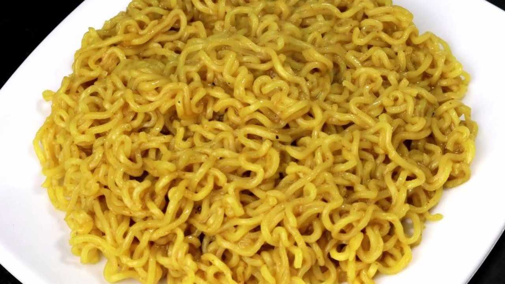

Maggi

Description
Maggi is a very popular isntant noodle. Here's what we need to make it.
Ingredients
- A packet of maggi (contains noodles and masala)
- Water
Steps
- Boil 250mL of water.
- Remove a little bit of water. Put the noodle and pour the water until the noodle barely submerges.
- Let it cook in the heat until the noodle cake softens.
- Put the masala and let it cook for a minute or two.
- Turn off the heat, let it cool down a bit and enjoy.